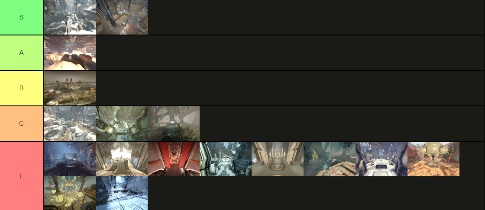

Arbitration missions are challenging but rewarding, providing exclusive rewards that can significantly enhance your arsenal. However, to truly excel, you'll need to focus on several key elements: team composition, loadouts, mission strategies, and resource management. By understanding and implementing these aspects, you can significantly reduce your farming time while increasing the quality and quantity of rewards.
Whether you're a seasoned veteran or a newcomer looking to refine your approach, this guide will equip you with the knowledge to navigate the intricacies of Arbitration farming effectively. Let's dive into the best practices that will elevate your gameplay and ensure that every mission counts!
Topics
Team Composition
Tilesets
Warframes
Team Composition
2:2 vs 3:1
This comp is sort of an amalgam of the previous metas, as well as making good use of the corrosive green shards. When recruiting for squads you can refer to the playstyles as 2:2 or 3:1, they are the same frames but with different subsume choices and roles.
3:1 is 3 dps and 1 support, where Wisp runs afentis and can still use sporelacer/akarius to contribute to kills if needed. This playstyle is much more damage per shot and requires much less spam firing. There is also less risk of failing the mission in the later waves because there will be more players actively killing sneaky enemies that make it out of spawn. You could still run EM in 3:1 if you prefer of course, you might run into entity limit issues though.
2:2 is 2 dps and 2 support, where Saryn and Mirage run EM, both need to be ON POINT for this playstyle to work properly, maintaining constant spam fire and collecting vitus quickly and preferably not at the same time as each other. You will only have 2 out of 4 members of the squad outputting kills per minute, and if one or both dpsers are lacking it will be readily apparent, they have to cover all the spawns with napalm shots on a constant rotation. This is not as beginner friendly as 3:1. Wisp and Chroma/Octavia run afentis.
Tilesets

Tileset Tier List
tilesets play a crucial role in shaping the overall gameplay experience, influencing factors like enemy spawns, mission objectives, and player strategies. Different tilesets have unique spawn mechanics for enemies, and understanding these patterns helps players anticipate where foes will appear, allowing for better positioning and tactics during combat.
Each tileset comes with its own layout, including obstacles, cover points, and verticality, which enables players to navigate effectively, utilize the environment to their advantage, and avoid unnecessary damage.
Once you've gathered a collection of Corrupted Mods, you can sell them to other players via trade chat or platforms like Warframe Market. Pricing can vary, but rare and meta-relevant mods, like "Narrow Minded" and "Transient Fortitude," are consistently valuable. The ability to run these missions repeatedly and the relatively high drop rate of Corrupted Mods make this a reliable source of early Platinum. For new players, learning how to navigate the Vaults and efficiently manage Dragon Keys is a great way to start building a solid Platinum reserve.
Saryn
Saryn is the primary DPS - Don’t take this role for defense if you’re newer to Arbitrations.
Toxic lash applies 222% of weapons total damage as toxin alongside all sources of damage (not combining) including nightwatch napalm's fire ticks and contagion's toxin cloud ticks. This triple dips bane/roar. Lash benefits from base damage, elemental damage, and eclipse as well.
Venom dose will give the team 739% corrosive elemental damage and some nice status weighting.
Contagion cloud is more significant than at first glance. It will create 10m diameter toxin clouds that last 20 seconds for each enemy killed while toxic lash is up.
These 4,434 toxin damage clouds add up quickly and will overlap with each other, x2.47 roar =10,951. Our main priority is the arbi drones, because they drop the vitus, and having as many possible damage instances at once is very beneficial for killing the drones (before they can shield gate) because only 5 arbi drones can be spawned in at one given time.
Another side benefit of contagion are the damage ticks on screen as enemies spawn to allow for easy spotting and faster kills per minute.
Mirage
Solar Eclipse will provide a 1,555% final multiplicative damage buff to allies within 15m, and requires augment mod. Buff does not persist, so when you move or your allies leave the radius they lose the buff
Mirage should run Zenurik focus school and make sure to drop hardened wellspring at the start of the run for chroma and wisp to give +20% strength for their initial buffs
Venom dose will give the team 739% corrosive elemental damage and some nice status weighting.
Energized Munitions gives you 75% ammo efficiency allowing for spam firing, if you want to increase the duration you can replace Augur Secrets or Transient Fortitude with Constitution, if that’s still not enough duration replace Transient fortitude with Narrow minded and Augur Secrets with Stretch.
Wisp
Wisp's primary focus is to provide buffs, but you still help with kills via sporelacer or akarius.
Shock mote isn't necessary if trying to cover 3 separate camp spots. Other than that it's good to throw down as it provides a meaningful form of cc that will end up covering a lot of area due to specters and kavats picking up shock mote as well. The cc can save your cheeks when looting, 15m range on the shock mote isn't going to affect enemy spawns from the camp spot.
Be sure to spawn a Nidus specter and wait for tether before placing motes in key positions, as they will keep that 1.58x final strength multiplier for the rest of the arbitration. This many strength shards is not necessary, just try to hit at least 170% haste mote with nidus noodle at minimum.
Roar subsume will provide 247% multiplicative damage buff similar to bane mods, to allies within 25m and persists. With the augment mod you can re-cast if you miss one of the dpsers, or just jump off the tile so it resets roar cooldown.